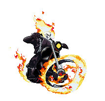

Assim que Roxanne retirou a proteção, Satã tomou os
poderes do Motoqueiro. Porém, Blaze conseguiu se safar com a intervenção de Daimon Hellstrom,
o filho de Satã, que havia virado exorcista na Terra. Algum tempo depois, Blaze conseguiu encarcerar
Zarathos numa joía chamada Cristal Espiritual. Livres do demônio, Johnny e Roxanne se casaram e tiveram dois filhos.
